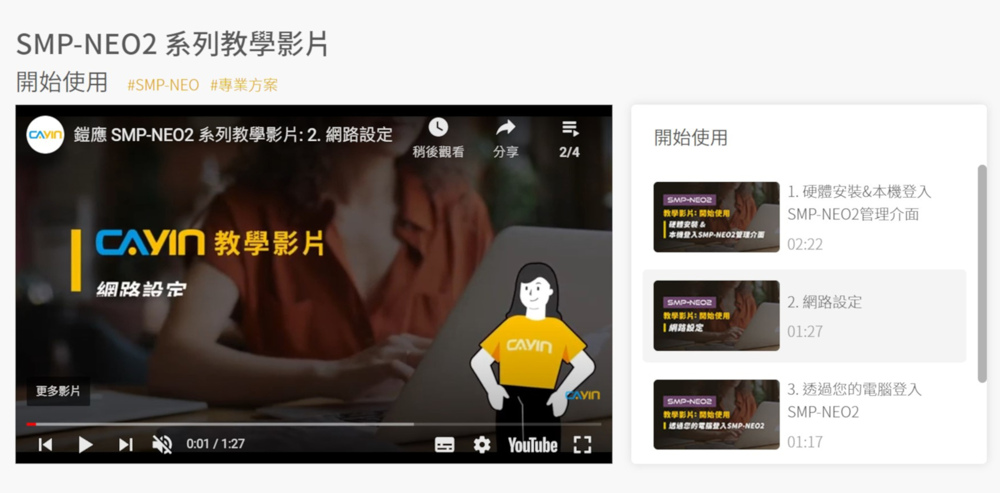
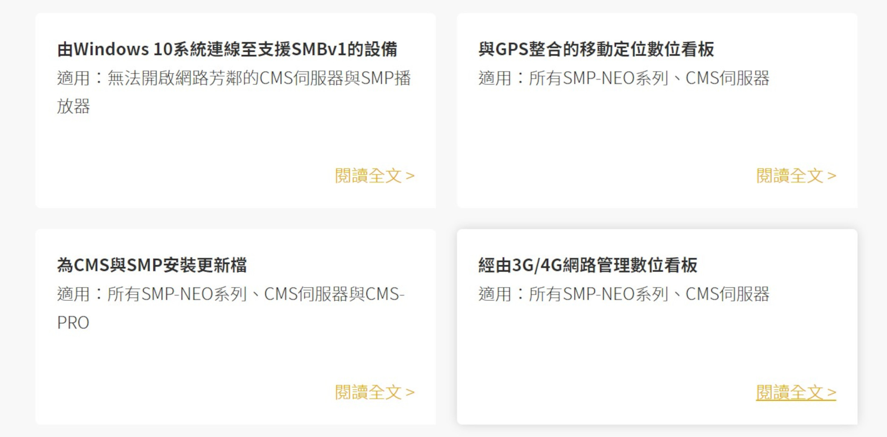
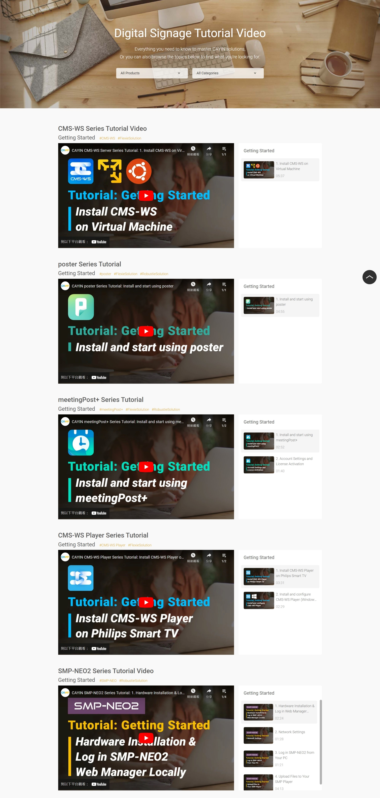
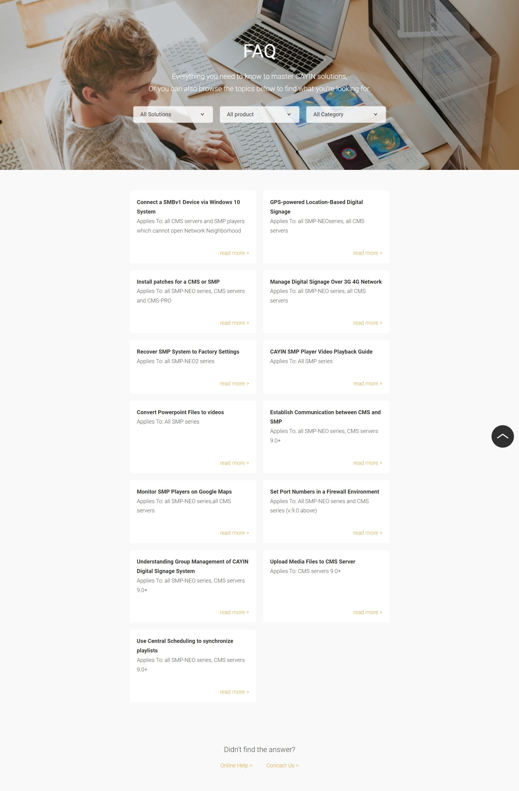

設計目的
支援頁面將所有關於技術支援相關的資源整合到官網上，像是教學影片頁面是將影音平台上的影片整合並做分類，常見問題集頁面則是整理出顧客常遇到的問題，並利用圖文詳細列出解答。為了提升這些頁面使用上的便利性，還加上了過濾功能讓顧客更方便查找所需資訊。
這些頁面的目的是提供資訊、讓顧客能順利解決問題，重點為資訊本身，因此在設計上做簡化，注重於資訊上的編排清晰。
設計細節


利用灰階及簡約的設計以避免干擾到影片以及資訊的呈現。
設計展示

